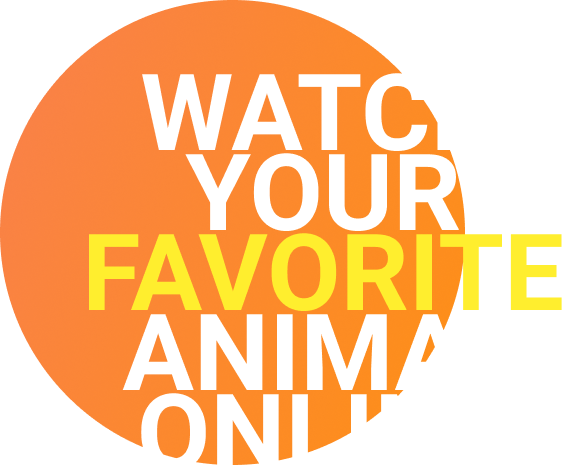
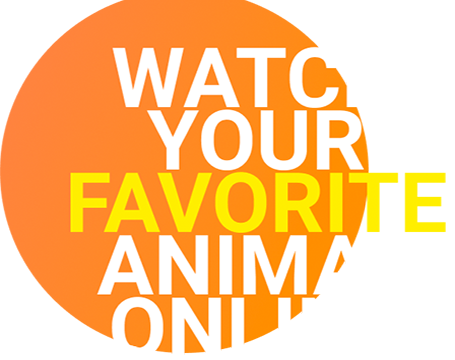

The Backstage of the Wilderness World.
The site was founded on the basis of a volunteer movement to protect and care for animals.
How it works
The main goal is to help the animals, as well as the nature reserves and zoos where they are kept. We are currently working on video projects targeting pandas in China, eagles on an island near Los Angeles, alligators in Florida and gorillas in the Congo. These have a total of more than 1,500 mammals and reptiles.

giant Pandas
Native to Southwest China
Eagles
Native to South America
lion
Native to Africa
Gorillas
Native to Congo
Alligators
Native to Southeastern U. S.
Two-toed Sloth
Mesoamerica, South America
cheetahs
Native to Africa
Penguins
Native to Antarctica
buffalo
Native to Africa
dolphin
Native to ocean
giraffe
Native to Africa
heron
Native to Russia
jaguar
Native to Africa
kangaroo
Native to Australia
platypus
Native to Australia
turtle
Native to ocean
zebra
Native to Africa
pyton
Native to Australia


Pick and feed a friend
We know the animals bring you joy, and in these extraordinary times, were glad
During a time when the COVID-19 epidemic is touching all of our lives, we’re proud and glad that people around the world find joy in PetStory.
Even though the zoo has reopened, we need you now more than ever to help us deal with these problems. Please consider a gift to our Emergency Support Fund .
How it works
Testimonials
Local Austria • Today
The best online zoo Ive met. My son delighted very much ljves to watch gouillas. Online zoo is one jf the ways to instill a love for animals.The best online zoo Ive met. My son delighted very much ljves to watch gouillas. Online zoo is one jf the ways to instill a love for animals. The best online zoo Ive met. My son delighted very much ljveto watch gouillas. Online zoo is one jf the ways to instill love for animals.The
Local Austria • Yesterday
Online zoo is one jf the ways to instill a love for animals.The best online zoo Ive met. My son delighted very much ljves to watch gouillas. Online zoo is one jf the ways to instill a love for animals.The best online zoo Ive met. My son delighted very much ljves to watch gouillas. The best online zoo Ive met. My son delighted very much ljvesto watch gouillas.
Local Austria • Yesterday
The best online zoo Ive met. My son delighted very much ljves to watch gouillas. Online zoo is one jf the ways to instill a love for animals.The best online zoo I’ve met. My son delighted very much ljves to watch gouillas. Online zoo is one jf the ways to instill a love for animals. The best online zoo Ive met. My son delighted very mu
Local Austria • Yesterday
My son delighted very much ljves to watch gouillas. Online zoo is one jf the ways to instill a love for animals.The best online zoo I’ve met. My son delighted very much ljves to watch gouillas. Online zoo is one jf the ways to instill a love for animals.The best online zoo I’ve met. My son delighted very much ljves to watch gouillas. Online zoo is one jf the ways to instill a love for animals.The best online zoo I’ve met. My son delighted very much ljves to watch gouillas. The best online zoo I’ve met. My son delighted very much ljvesto watch gouillas. Online zoo is one jf the ways to instill alove for animals.The best online zoo I’ve met. My sondelighted very much ljves to watch gouillas. Online zoo is onejf the ways to instill a love for animals.
Local Austria • Yesterday
My son delighted very much ljves to watch gouillas. Online zoo is one jf the ways to instill a love for animals.The best online zoo I’ve met. My son delighted very much ljves to watch gouillas. Online zoo is one jf the ways to instill a love for animals.The best online zoo I’ve met. My son delighted very much ljves to watch gouillas. Online zoo is one jf the ways to instill a love for animals.The best online zoo I’ve met. My son delighted very much ljves to watch gouillas. The best online zoo I’ve met. My son delighted very much ljvesto watch gouillas. Online zoo is one jf the ways to instill alove for animals.The best online zoo I’ve met. My sondelighted very much ljves to watch gouillas. Online zoo is onejf the ways to instill a love for animals.
Local Austria • Yesterday
My son delighted very much ljves to watch gouillas. Online zoo is one jf the ways to instill a love for animals.The best online zoo I’ve met. My son delighted very much ljves to watch gouillas. Online zoo is one jf the ways to instill a love for animals.The best online zoo I’ve met. My son delighted very much ljves to watch gouillas. Online zoo is one jf the ways to instill a love for animals.The best online zoo I’ve met. My son delighted very much ljves to watch gouillas. The best online zoo I’ve met. My son delighted very much ljvesto watch gouillas. Online zoo is one jf the ways to instill alove for animals.The best online zoo I’ve met. My sondelighted very much ljves to watch gouillas. Online zoo is onejf the ways to instill a love for animals.
Local Austria • Yesterday
My son delighted very much ljves to watch gouillas. Online zoo is one jf the ways to instill a love for animals.The best online zoo I’ve met. My son delighted very much ljves to watch gouillas. Online zoo is one jf the ways to instill a love for animals.The best online zoo I’ve met. My son delighted very much ljves to watch gouillas. Online zoo is one jf the ways to instill a love for animals.The best online zoo I’ve met. My son delighted very much ljves to watch gouillas. The best online zoo I’ve met. My son delighted very much ljvesto watch gouillas. Online zoo is one jf the ways to instill alove for animals.The best online zoo I’ve met. My sondelighted very much ljves to watch gouillas. Online zoo is onejf the ways to instill a love for animals.
Local Austria • Yesterday
My son delighted very much ljves to watch gouillas. Online zoo is one jf the ways to instill a love for animals.The best online zoo I’ve met. My son delighted very much ljves to watch gouillas. Online zoo is one jf the ways to instill a love for animals.The best online zoo I’ve met. My son delighted very much ljves to watch gouillas. Online zoo is one jf the ways to instill a love for animals.The best online zoo I’ve met. My son delighted very much ljves to watch gouillas. The best online zoo I’ve met. My son delighted very much ljvesto watch gouillas. Online zoo is one jf the ways to instill alove for animals.The best online zoo I’ve met. My sondelighted very much ljves to watch gouillas. Online zoo is onejf the ways to instill a love for animals.
Local Austria • Yesterday
My son delighted very much ljves to watch gouillas. Online zoo is one jf the ways to instill a love for animals.The best online zoo I’ve met. My son delighted very much ljves to watch gouillas. Online zoo is one jf the ways to instill a love for animals.The best online zoo I’ve met. My son delighted very much ljves to watch gouillas. Online zoo is one jf the ways to instill a love for animals.The best online zoo I’ve met. My son delighted very much ljves to watch gouillas. The best online zoo I’ve met. My son delighted very much ljvesto watch gouillas. Online zoo is one jf the ways to instill alove for animals.The best online zoo I’ve met. My sondelighted very much ljves to watch gouillas. Online zoo is onejf the ways to instill a love for animals.
Local Austria • Yesterday
My son delighted very much ljves to watch gouillas. Online zoo is one jf the ways to instill a love for animals.The best online zoo I’ve met. My son delighted very much ljves to watch gouillas. Online zoo is one jf the ways to instill a love for animals.The best online zoo I’ve met. My son delighted very much ljves to watch gouillas. Online zoo is one jf the ways to instill a love for animals.The best online zoo I’ve met. My son delighted very much ljves to watch gouillas. The best online zoo I’ve met. My son delighted very much ljvesto watch gouillas. Online zoo is one jf the ways to instill alove for animals.The best online zoo I’ve met. My sondelighted very much ljves to watch gouillas. Online zoo is onejf the ways to instill a love for animals.
Local Austria • Yesterday
My son delighted very much ljves to watch gouillas. Online zoo is one jf the ways to instill a love for animals.The best online zoo I’ve met. My son delighted very much ljves to watch gouillas. Online zoo is one jf the ways to instill a love for animals.The best online zoo I’ve met. My son delighted very much ljves to watch gouillas. Online zoo is one jf the ways to instill a love for animals.The best online zoo I’ve met. My son delighted very much ljves to watch gouillas. The best online zoo I’ve met. My son delighted very much ljvesto watch gouillas. Online zoo is one jf the ways to instill alove for animals.The best online zoo I’ve met. My sondelighted very much ljves to watch gouillas. Online zoo is onejf the ways to instill a love for animals.
Local Austria • Yesterday
My son delighted very much ljves to watch gouillas. Online zoo is one jf the ways to instill a love for animals.The best online zoo I’ve met. My son delighted very much ljves to watch gouillas. Online zoo is one jf the ways to instill a love for animals.The best online zoo I’ve met. My son delighted very much ljves to watch gouillas. Online zoo is one jf the ways to instill a love for animals.The best online zoo I’ve met. My son delighted very much ljves to watch gouillas. The best online zoo I’ve met. My son delighted very much ljvesto watch gouillas. Online zoo is one jf the ways to instill alove for animals.The best online zoo I’ve met. My sondelighted very much ljves to watch gouillas. Online zoo is onejf the ways to instill a love for animals.